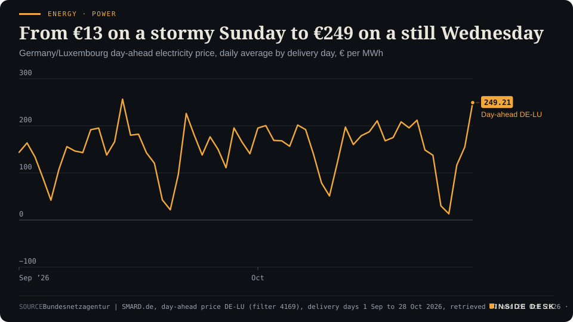
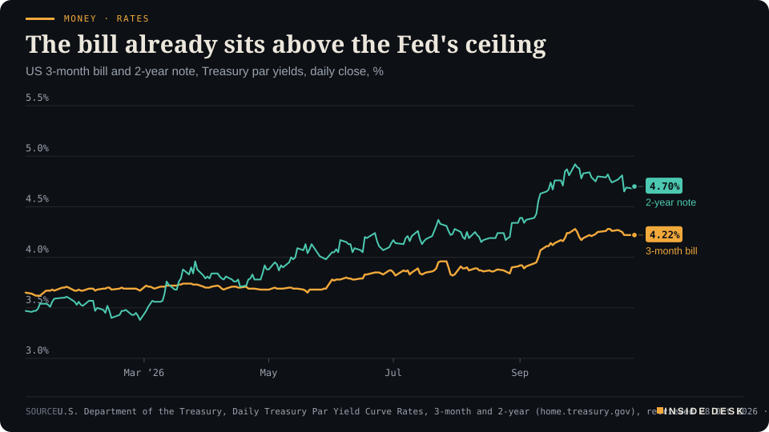
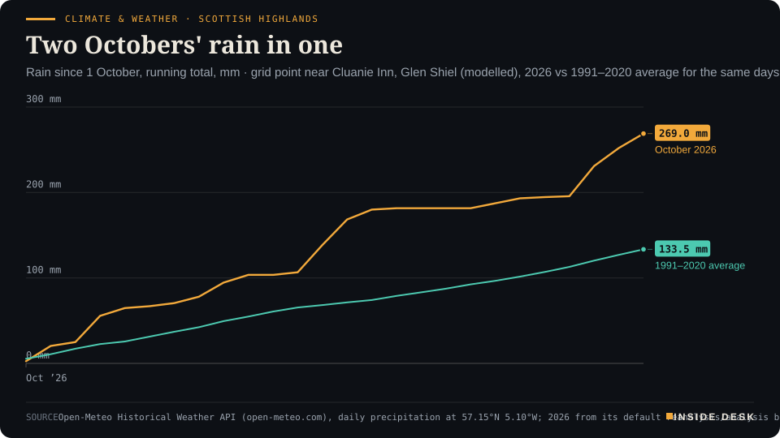

Inside Desk ePaper, Morning ePaper · Wed 28 Oct 2026
Wednesday, 28 October 2026Always free
Inside Desk
Morning ePaperAvailable 06:30 CET · Berlin
Lead · Energy & Industry
Germany's day-ahead power price rose from €13 on a stormy Sunday to €249 for today. The grid did exactly what it was built to do. The question is what you build so that it has to do it less often.
The wind left Germany on Tuesday and Wednesday's power cleared at €249.21 a megawatt hour. Israel's count gives no bloc 61 yet, the Fed decides tonight with the three-month bill above its ceiling, and two storms left Britain counting reconnections. Eleven desks, every number sourced.
Energy · PowerFrom €13 on a stormy Sunday to €249 on a still WednesdayGermany/Luxembourg day-ahead electricity price, daily average by delivery day, € per MWh

Line chart of the daily average German-Luxembourg day-ahead electricity price from 1 September to 28 October 2026, in euros per megawatt hour. It peaks at €256.55 on 14 September. It falls to €30.12 on Saturday 24 October and €13.12 on Sunday 25 October during the storm, recovers to €116.57 on Monday 26 October and €155.11 on Tuesday 27 October, and rises to €249.21 for delivery on Wednesday 28 October, the latest value and the highest since 14 September.
Source: Bundesnetzagentur | SMARD.de, day-ahead price DE-LU (filter 4169), delivery days 1 Sep to 28 Oct 2026, retrieved 27 and 28 Oct 2026 · CC BY 4.0 · CSV
Geo-economics · p. 4
Markets & Macro · p. 5
Climate & Weather · p. 14
The day in one sentenceThe wind dropped and Wednesday's German power cost €249 a megawatt hour, Israel's count has handed no one 61 seats yet, and the Fed decides tonight: a day for meters and tallies, not speeches.
ContentsInside Desk · Morning ePaper28 October 2026
The wind left Germany on Tuesday and Wednesday's power cleared at €249.21 a megawatt hour. Israel's count gives no bloc 61 yet, the Fed decides tonight with the three-month bill above its ceiling, and two storms left Britain counting reconnections. Eleven desks, every number sourced.
11 edition pieces · 11 desks · Available 06:30 CET, 28 October 2026
22 ePaper extras, added , 28 October. They appear only in the ePaper and carry their own time.
17:30 Evening ePaper, updated live until 22:30 with an “Updated” time and a Latest page
Sun 10:00 The Sunday Magazine
Berlin time. Every issue is free.
How to read it
Swipe, use the arrow keys or the page strip. Tap any headline for the reading view. Press / to search, t for contents, +/− to zoom. Download the PDF.
LeadInside Desk · Morning ePaper28 October 2026
Energy & Industry · Lead · 3 min
Germany's day-ahead power price rose from €13 on a stormy Sunday to €249 for today. The grid did exactly what it was built to do. The question is what you build so that it has to do it less often.
On Sunday, a storm blew across Germany and power was almost free. Today it is not. The German-Luxembourg day-ahead price for delivery on Wednesday 28 October averages €249.21 per megawatt hour, according to SMARD, the Bundesnetzagentur’s data portal1. On Sunday 25 October it averaged €13.121. It is the dearest day since 14 September, when the average reached €256.551. Desk arithmetic: today’s power costs about nineteen times Sunday’s.
Yesterday evening’s note reported the auction result. This morning SMARD has added the other half of the story: what the plants actually did on Tuesday, the day the wind dropped1. It explains the price better than any speech will today.
The wind halved. Onshore wind turbines generated 1,019,966 megawatt hours on Sunday and 440,623 MWh on Tuesday1. Offshore farms added 92,072 MWh on Sunday and 147,903 MWh on Tuesday1. Desk arithmetic: onshore output fell by about 57%, and wind as a whole went from about 1.11 million MWh to about 0.59 million. On Sunday, wind’s output equalled about 93% of the day’s grid load of 1,192,490 MWh. On Tuesday it equalled about 44% of 1,350,195 MWh1.
Energy · PowerFrom €13 on a stormy Sunday to €249 on a still WednesdayGermany/Luxembourg day-ahead electricity price, daily average by delivery day, € per MWh
Line chart of the daily average German-Luxembourg day-ahead electricity price from 1 September to 28 October 2026, in euros per megawatt hour. It peaks at €256.55 on 14 September. It falls to €30.12 on Saturday 24 October and €13.12 on Sunday 25 October during the storm, recovers to €116.57 on Monday 26 October and €155.11 on Tuesday 27 October, and rises to €249.21 for delivery on Wednesday 28 October, the latest value and the highest since 14 September.
Source: Bundesnetzagentur | SMARD.de, day-ahead price DE-LU (filter 4169), delivery days 1 Sep to 28 Oct 2026, retrieved 27 and 28 Oct 2026 · CC BY 4.0 · CSV
Demand rose at the same time. Tuesday was a working day. Grid load was about 13% higher than on Sunday, by desk arithmetic from SMARD’s figures1. Less wind and more demand at once is the combination that empties a cheap order book. …
Geo-economicsInside Desk · Morning ePaper28 October 2026
Geo-economics · 2 min
On Sunday CENTCOM's commander said Hormuz's main lanes were free of Iranian mines. On Tuesday Iran said another tanker hit one. Shipowners have to plan against both statements at once.
On Sunday, CENTCOM commander Gen. Brad Cooper said the main shipping lanes in the Strait of Hormuz were “safe and free of Iranian mines”1. On Tuesday, Iran’s navy said an oil tanker had struck mines east of the strait, caught fire and been damaged, after switching off its tracking systems and trying to enter a “restricted and unsafe” area2. It gave no name, flag, crew details or casualty figures, and did not say who laid the mines2.
A pattern of claims. Iran says this is not the first. The Revolutionary Guards said on Friday that two supertankers outside designated routes had hit mines; on Monday Iran said three more had1. Desk arithmetic: one plus two plus three is six tankers in about a week, if every claim is accurate, and none of the vessels in this latest case has been identified1. Tehran’s message is the same each time: the strait is “unsafe and closed” to ships that do not coordinate with its armed forces2. Its Hormuz authority also said it would take action against a shipping company, without naming which or what3.
What the market heard. Brent rose $1.48, or 1.3%, to $115.36 a barrel by 02:40 CET on Wednesday, Reuters reported, though that move followed the Houthis’ claimed strike on a Saudi refinery rather than the mine report3.
The temptation is to pick a side. You do not need to. A shipowner does not have to decide whether Gen. Cooper or Iran’s navy is right; the owner has to decide whether a war-risk underwriter will cover the voyage and at what price. That is why the most useful facts this week will be dull ones: a named hull, a classification society’s damage survey, a flag state’s casualty report. Statements set the mood. Survey reports set the premium.
Nothing here is investment advice.
Geo-economics · Short item · ePaper extra, added
The New York Times reports Washington is weighing sanctions relief for Russia's Direct Investment Fund, which Moscow wants in on diesel sales to the US. Treasury is reviewing it under standard procedure.
The Trump administration is considering lifting sanctions on the Russian Direct Investment Fund (RDIF), sources told The New York Times1. Russia wants the relief so the fund can take part in supplying Russian diesel to the United States1. No decision has been reported.
The fund’s head, Kirill Dmitriev, is a central figure in the US-Russia talks and leads the Kremlin’s push for joint business ventures1. The Biden administration sanctioned RDIF on 28 February 2022, four days after the full-scale invasion. Treasury said then that, while officially a sovereign wealth fund, it was “widely considered a slush fund” for Vladimir Putin1.
The diesel deal itself has already cost something. The Guardian notes that Donald Trump “stunned allies” by agreeing to buy Russian diesel, pushing US-Ukraine ties to their lowest point in 18 months2.
Here the dull machinery is worth watching closely. One source told the Times that Treasury is handling RDIF’s application under its standard procedures, and that the fund must show the reasons it was sanctioned no longer apply1. That is the right test, and it leaves a record. If relief comes, the reasoning should be published, so you can judge whether the facts changed or only the customer did.
Geo-economics · Brief · ePaper extra, added
Qatar’s ruler and Iranian President Masoud Pezeshkian met in Moscow on Tuesday and “reviewed developments in the regional situation, foremost among them the latest on the negotiations, the Strait of Hormuz, and energy supplies”, the emir’s office said1. Pezeshkian told Vladimir Putin the Middle East is “capable of resolving our problems” without the US1. In Washington, Donald Trump said the war could end “whenever I want it to”, provided Iran declares it will never have a nuclear weapon1. Three capitals, three statements, no shared document. A communiqué you can read is worth more than a venue you can photograph.
Markets & MacroInside Desk · Morning ePaper28 October 2026
Markets & Macro · 2 min
SK Hynix's profit, not a promise, lifted Asia this morning. Tonight Microsoft and Alphabet have to show theirs.
The Kospi, Seoul’s benchmark index, jumped 6.6% on Wednesday, Bloomberg reports, led by a 10% rise in SK Hynix after the memory-chip maker said it would return about $45 billion more to shareholders as its profit rose sevenfold1. Samsung Electronics gained 9.5% and Kioxia 16%1. Al Jazeera puts SK Hynix’s third-quarter operating profit at 83.33 trillion won, about $62.8 billion, up about 630% on the year2. The broader MSCI Asia Pacific index added 1.4%1.
A different kind of AI news. Much of this week’s enthusiasm rests on plans. Anthropic filed to list on the Nasdaq, reporting a net loss of $80.7 billion in the first half of 2026 on $16.3 billion of revenue2. Meta’s upsized $25 billion share sale drew demand for about five times the shares on offer, people familiar with the offering told Bloomberg, as the company seeks $98 billion for its AI spending1. SK Hynix is the other kind: a supplier that has already been paid and is handing cash back. Desk arithmetic: Anthropic’s half-year loss is about five times its revenue; SK Hynix’s quarter is a profit.
Wall Street set the tone. On Tuesday the Nasdaq Composite rose 1.18%, the S&P 500 0.6% and the Dow 0.03%2. AMD gained 5.45%, Broadcom 4% and Intel 3.61%2. Nasdaq 100 futures added 0.4% in Asian hours1.
The test comes tonight. Microsoft and Alphabet report on Wednesday, Amazon on Thursday and Apple on Monday2. Investors want to see whether the hundreds of billions poured into AI infrastructure pay off2. Gartner forecasts global AI investment at $2.7 trillion this year and $3.6 trillion in 20272. A forecast of spending is not a forecast of returns. The invoices that SK Hynix has already collected are the closest thing to a return the boom has printed so far.
Not everything rose: Euro Stoxx 50 futures were down 0.2%1. Nothing here is investment advice.
Markets & Macro · Short item · ePaper extra, added
Wellington surprised by doing nothing. Tokyo's bond market moved before the Bank of Japan has spoken.
The New Zealand dollar slumped almost 2% against the Australian dollar on Wednesday, its biggest fall since 2017, after the Reserve Bank of New Zealand surprisingly left interest rates unchanged, Bloomberg reports1. A central bank that holds when markets expected it to act is still making a decision, and the currency priced it within minutes.
In Japan, the 10-year government bond yield rose three basis points to 2.825%1. Australia’s 10-year rose five points to 5.21%, and the US 10-year two points to 5.02%1. The yen was little changed at 157.98 per dollar, and the euro at $1.11231. A Bloomberg gauge of the dollar edged higher for a fourth straight day1.
The Bank of Japan and the European Central Bank decide later this week, after the Federal Reserve tonight1. Three central banks, all expected to hold, and yet the long yields are rising across the Pacific. Desk arithmetic: the Australian 10-year now yields about 0.19 points more than the American one.
Markets & Macro · Brief · ePaper extra, added
Jio Platforms, Mukesh Ambani’s telecoms group, is set to debut on India’s stock market on Wednesday after a record initial public offering, Bloomberg reports, into a market that has been unkind to India’s big deals1. In Hong Kong, Suzhou Dongshan Precision Manufacturing slumped on its first day of trading after raising HK$9.9 billion, about $1.3 billion1. Anthropic has picked JPMorgan Chase to lead the US sale of its shares to individual investors, people familiar with the matter said1.
A listing is the moment a story meets a price. Dongshan met it on Wednesday and the price was lower. For a retail buyer, the cheapest protection is to read the prospectus before the headline. Nothing here is investment advice.
Politics & InstitutionsInside Desk · Morning ePaper28 October 2026
Politics & Institutions · 2 min
Late last night the exit polls called it a dead heat. By dawn, with about 37% of votes counted, Netanyahu's bloc stood at 57 seats. Neither side has 61, and the soldiers' envelopes are still to come.
Late last night Channel 13’s exit poll had the two blocs tied on 51 seats each and Channel 12 had Netanyahu’s bloc ahead, 52 to 492. This morning’s numbers say something else again, and neither set is the result. With about 37.4% of votes counted at 04:49 CET, the Central Elections Committee’s partial tally gave Benjamin Netanyahu’s governing bloc 57 of the Knesset’s 120 seats, the “change bloc” 47 and the Arab-led parties 161. An hour earlier, at 31.2% counted, the split was 59, 46 and 151. The committee stresses the figures are preliminary and may change1.
By party, Likud leads on 28, Gadi Eisenkot’s Yashar has 21 and the Joint List 121. Together has 11, United Torah Judaism and Yisrael Beytenu eight each, and the Democrats, Otzma Yehudit, Shas and the Religious Zionist-Zehut list seven each1. Ra’am is in with 3.81% of the vote, four seats; the threshold is 3.25%1.
Desk arithmetic: 47 plus 16 is 63, so on these partial numbers the parties outside Netanyahu’s bloc add up to more than 61. But a sum is not a coalition. Whether those parties can agree to govern together is what the coming talks are for, and Netanyahu’s 57 is four short of 611,2.
Both camps spoke as if the night were over. “The old era is over,” Eisenkot told supporters; Netanyahu said “the right bloc has a majority”2. Turnout was 77.7%, the highest since 1999 and 7.1 points above 2022, and the committee says Arab turnout reached 80%1. Two new lists, the Reservists-Economic Party (2.72%) and Amcha Yisrael (1.77%), are below the threshold so far1, and Hendel is counting on the double-envelope ballots that include soldiers’ votes3.
What happens next is procedure, not rhetoric. Once the count is final, President Isaac Herzog consults party leaders and nominates the candidate he thinks most likely to form a government, who then has up to 42 days2. Until a coalition is sworn in, Netanyahu’s cabinet stays on as caretaker2. You can ignore every victory speech this week. Watch the committee’s tallies instead.
Politics & Institutions · Short item · ePaper extra, added
High turnout squeezed the small lists. On the partial count two of them, Hendel's Reservists and Winter's Amcha Yisrael, sit below the line, and each camp blames the other for the waste.
Israel’s 3.25% threshold is a quiet rule with loud effects. On the partial official count, at about 37% of votes counted, the Reservists-Economic Party of Yoaz Hendel and Yaron Zelekha had 2.72% and Ofer Winter’s Amcha Yisrael 1.77%; both are out unless the remaining ballots change things1. Ra’am, at 3.81%, is in with four seats1.
Ynet reports that record turnout “left little room for smaller parties”2. The Haredi Public Party of Moti Leitner, which had momentum on social media, also fell short in the exit polls2.
Turnout among Arab Israelis reached 80%, against 77.7% nationally, the Central Elections Committee’s figures show1. On the partial count the Joint List has 12 seats and Ra’am four1. Ra’am’s Mansour Abbas said he hopes the final results let the opposition and his party reach the 61 seats needed to govern2. Ra’am had been projected at around seven seats in the exit polls2; the partial count has it on four1. Arab-led lists accused Netanyahu of inciting hatred to mobilise his voters during polling day2. A record turnout is not yet a role in government. It is, though, a figure nobody can wish away in coalition talks.
Psychology & BehaviourInside Desk · Morning ePaper28 October 2026
Psychology & Behaviour · 2 min
A US survey of 58,106 adults finds moderate or severe depressive symptoms in 17.1% of people with type 1 diabetes, against 6.6% of those without diabetes. The authors' remedy is not a slogan. It is screening.
People with type 1 diabetes keep more records than almost anyone: glucose readings, insulin doses, carbohydrates, the occasional 3 a.m. alarm. A research letter in the Annals of Internal Medicine, published online on 20 October and reported on Tuesday, suggests one more line belongs in the log1.
Tianyu Cao of the Johns Hopkins Bloomberg School of Public Health and colleagues used the US National Health Interview Survey, 58,106 adults in all, including 326 with type 1 diabetes and 5,802 with type 21. The weighted shares were 0.6% and 8.9% of the adult population1.
The gap is plain. Moderate or severe depressive symptoms were reported by 17.1% of adults with type 1 diabetes, 12.4% with type 2 and 6.6% without diabetes1. For moderate or severe symptoms of generalised anxiety disorder the figures were 16.2%, 8.7% and 6.1%1. Desk arithmetic: in this survey, people with type 1 diabetes reported depressive symptoms at about two and a half times the rate of people without diabetes, and anxiety symptoms at about two and a half times as well. Within the type 1 group, rates were highest among women, people with less than a high-school education and those under 651.
Two cautions. A survey measures symptoms, not diagnoses, and 326 people is a modest group for slicing into subgroups. Neither caution makes the gap go away.
The authors’ conclusion is refreshingly operational: “Better mental health screening, especially in high-risk populations, is essential for improving diabetes management and quality of life”1. That is not a call for a campaign. It is a call for a questionnaire in the waiting room of a clinic that already exists. If you live with type 1 diabetes and the low days have stopped being about glucose, that is a legitimate thing to raise at your next appointment.
Psychology & Behaviour · Short item · ePaper extra, added
US teachers spend about 17% of their working time supporting pupils' mental health. Half say it has become harder. The fix the researchers propose is a referral, not a pep talk.
Nobody hires a maths teacher as a counsellor. Many of them become one anyway. RAND’s 2026 State of the American Teacher Survey, a nationally representative sample of 829 K–12 public-school teachers questioned in January and February, found that nearly all provided at least one kind of mental-health or well-being support to pupils in the 2025–26 school year1. On average that took about eight hours a week, 17% of their working hours1.
It costs them something. Among teachers who frequently provided more support, 62% reported high emotional costs from teaching, against 38% of those who did not frequently provide any1. …
Researchers from Jining Medical University and partners followed 7,054 middle-aged and older residents of three cities in Shandong, China, surveying them twice, 1 to 1.5 years apart, between April 2021 and July 20241. Of ten links between sleep and mood that held up, seven ran from sleep-related symptoms to later depressive symptoms and three the other way1. The strongest: difficulty falling asleep and difficulty staying asleep predicted later sleep problems on the depression questionnaire, and daytime lethargy predicted later low energy1. The authors are careful: these are exploratory associations, “not causal or within-person temporal effects”1. Still, if your nights have gone wrong for weeks, the study is one more reason to mention it to a doctor rather than wait for the mood to follow.
Energy & IndustryInside Desk · Morning ePaper28 October 2026
Energy & Industry · Short item · ePaper extra, added
Brent snapped a two-day fall overnight. The facts behind the move are thinner than the price.
Brent crude rose $1.48, or 1.3%, to $115.36 a barrel at 02:40 CET on Wednesday, CNBC reports1. US crude, WTI, rose $1.22 to $101.121. The trigger was a claim: Yemen’s Houthis said on Tuesday they had hit Saudi Arabia’s biggest oil refinery, a 550,000-barrel-a-day plant, with a missile. Saudi authorities had not immediately confirmed it1. Bloomberg adds a second driver: a Wall Street Journal report that the US told several Gulf countries to be prepared for a short, intense military campaign after the midterm elections2.
Hold the two halves of the week together. On Tuesday oil fell nearly $2 as talks in the region eased supply worries; on Wednesday it took most of that back1. A market that swings on claims and reports is a market pricing fear, not barrels.
The barrels themselves tell a calmer story. Analysts polled by Reuters expect US crude stockpiles to have risen by about 15,000 barrels in the week to 23 October1. The OPEC+ group is expected to keep its December output targets unchanged on Sunday, three people with knowledge of the matter told Reuters, and most of its seven core members are producing below their targets1. Russia’s crude exports from its Baltic and Black Sea ports could fall next month as its refiners make more diesel, traders said1.
For you, the useful number arrives at the pump, not on the screen. Today’s headline price is a reaction to a statement nobody has yet verified. Wait for the Saudi side, and for Wednesday’s US inventory figures. Nothing here is investment advice.
Energy & Industry · Brief · ePaper extra, added
The November TTF gas contract closed at €96.68 per MWh on Monday, up 3.02% on Friday’s €93.85, and briefly touched €97.40 on Tuesday before easing, 3e-news reports1. The price is not the number to watch. Storage is. EU gas stores are about 75% full, the lowest level recorded for the season, and German stores only 61%1. Unplanned Norwegian outages and colder weather forecast across Europe add to the pressure, the report says1.
In Bulgaria, the Balkan Gas Hub’s day-ahead price for 27 October was €86.68 per MWh1. Desk arithmetic: about €10 below the Dutch benchmark. A full tank in October is the cheapest insurance policy a continent can buy. This year the premium is still being paid. Nothing here is investment advice.
Money, FX & CommitteesInside Desk · Morning ePaper28 October 2026
Money, FX & Committees · Podium vs Print · 2 min
A famous economist says more Fed hikes would be a mistake. The three-month Treasury bill already yields more than the Fed's ceiling.
Podium
“My problem is that it's the wrong policy measure right now.”
Mohamed El-Erian, chief economic adviser at Allianz, on CNBC's Squawk Box, quoted by CNBC, 26 October 2026
Print4.22%
The US three-month bill yield, above the Fed's 3.75%–4% target range. The two-year closed at 4.70%.
U.S. Treasury, Daily Treasury Par Yield Curve Rates, Tuesday 27 October 2026 close, retrieved 28 October 2026
The podium. Mohamed El-Erian, Allianz’s chief economic adviser, expects the Federal Reserve to raise rates further, and thinks it should not. “My problem is that it’s the wrong policy measure right now,” he told CNBC on Monday1. The answer to inflation worries and higher Treasury yields, he said, should be “fiscal containment, not monetary tightening”1. He warned that housing, car loans and consumer loans would take the hit1.
The print. The US Treasury’s daily par yield curve shows the three-month bill at 4.22% at Tuesday’s close and the two-year note at 4.70%2. The Fed’s target range has been 3.75%–4% since September’s quarter-point rise1. Desk arithmetic: the bill yields 0.22 points more than the top of that range. Since 2 January the three-month yield has risen 0.57 points, from 3.65%, and the two-year 1.23 points, from 3.47%2.
Money, FX & Committees · Short item · ePaper extra, added
Kevin Warsh wants markets to read the data, not the Fed. Tonight the market will read him anyway.
The Federal Reserve announces its decision this evening, Berlin time, and markets overwhelmingly expect no change after September’s quarter-point rise, CNBC reports1. The interesting part is the chairman. Kevin Warsh has said he is highly reluctant to signal future moves, as he seeks to move the Fed away from the “forward guidance” habit of most of this century1.
That puts pressure on the wording. Brett Ryan of Deutsche Bank expects Warsh to signal that recent inflation data reinforce the case that “further tightening will likely be needed over time”1. …
Money, FX & Committees · Brief · ePaper extra, added
The European Central Bank’s Governing Council meets today and tomorrow, and a hold at 2.5% is widely expected, ING’s economists write, with close to zero chance of a hike priced in1. The question is whether turmoil in French and other European bonds softens the message. ING thinks not, and expects the door to stay open for a December rise, which markets already price at more than 20 basis points1. There are no new staff projections at this meeting, so the wording carries the weight1.
For your savings and loans in euros, a hold is not nothing. It means today’s rates stay in place until the Council next moves. The decision is due on Thursday. Nothing here is investment advice.
Ordinary & Inherited LifeInside Desk · Morning ePaper28 October 2026
Ordinary & Inherited Life · 2 min
Allianz Trade now expects 8% more company insolvencies in Germany this year, the most in 13 years, and no fall before 2028. Every one of them starts as an invoice that is not paid.
Allianz Trade, the credit insurer, said on Tuesday that it expects company insolvencies in Germany to rise 8% in 2026, to 25,900 cases, the highest in 13 years1. In the spring it had expected a rise of 2%, or 4% if the conflict in the Middle East persisted1. Its forecast for 2027 is no change, at the same high level, and only in 2028 a fall of 5%, to 24,6001. Desk arithmetic: 25,900 a year is about 71 companies a day.
Where it lands. The sectors named are transport and logistics, construction, hospitality, and the car and machine-building industries1. After a rise of 85% since 2021, case numbers are still 30% above their pre-pandemic level, though well below the peaks of the global financial crisis, the insurer says1. In Germany, 239,000 jobs are directly at risk across 2026 and 2027, by its count; worldwide, about 2.7 million1.
Why the bill arrives now. Allianz Trade’s list is unglamorous: a weak economy, high energy costs, a shortage of skilled workers, and interest rates that stay higher for longer1. In Western Europe, it estimates, a rise of 100 basis points in bank lending rates would add between €6 billion and €10 billion in interest costs for companies1. There is also a quieter cause: the number of active firms grew by about 10% between 2021 and 2025, and fewer than half of new European companies survive beyond five years1. More starts mean, a few years later, more endings.
What you can do. An insolvency is the last line of a long ledger, and much of it is written by customers. If you run a small business, invoice promptly and chase the overdue ones early. If you are a customer of one, a craftsman, a café, a local printer, pay on the date the invoice says. A supplier who is paid on time can pay its own suppliers on time; that chain is most of what an economy is.
The constructive reading is in the same release: the insurer expects the number to stop rising next year and to fall in 20281. …
Ordinary & Inherited Life · Short item · ePaper extra, added
MediaMarktSaturn's parent sold €24 billion of goods and kept about €515 million of operating profit. In Germany it now runs 390 stores, down from 403.
Ceconomy, which owns MediaMarkt and Saturn, published preliminary figures for its 2025/26 financial year on Tuesday: revenue of about €24 billion, up 5.3% after currency and portfolio adjustments, and adjusted operating profit (EBIT) of about €515 million, above its own target of €500 million and up from €406 million a year earlier, Retail-News reports1. Between July and September, adjusted sales grew 6.5%, and 6.9% on comparable floor space1. Household appliances and IT and mobile devices drove the final quarter1.
Ordinary & Inherited Life · Brief · ePaper extra, added
Euro-area consumers expect inflation of 3.1% over the next twelve months, up from 3.0%, according to the European Central Bank’s Consumer Expectations Survey for September, published on Friday1. Perceived inflation over the past year rose to 3.6%1. Households expect their nominal income to grow 1.1% and their spending 3.7%; they say spending has already risen 5.3% over the past year1. Desk arithmetic: the expected spending line runs 2.6 points ahead of the expected income line. Three-year and five-year expectations held at 2.9% and 2.5%1. About 19,000 adults in eleven euro countries answered between 27 August and 28 September1. The ECB’s Governing Council decides on rates on Thursday. A household’s gap between what it earns and what it spends is the number no central bank can close for it, but it is the one each household can see first.
Tech & ComputeInside Desk · Morning ePaper28 October 2026
Tech & Compute · 2 min
Microsoft is offering voluntary exit packages to about 60,000 people, roughly a quarter of its staff, on the eve of its quarterly results. Read the payroll line beside the capital-spending line.
On Monday Microsoft’s chief people officer, Amy Coleman, told staff that the company is introducing a “Voluntary Exit Offer” for eligible employees in participating teams in Canada, India, the United Kingdom and the United States, at level 70 and below1. It is time-limited, it comes “with financial support and career planning resources”, and some organisations are offering it while others are not1. Around 60,000 people are eligible, according to a person familiar with the matter cited by CNBC, about 27% of a workforce of 223,0002.
The payroll line. This is the second such programme this year. In April, Microsoft offered its first voluntary retirement programme, for which about 7% of US employees were eligible; more than 30% of those eligible took it, the company said in July2. In July it also announced 4,800 layoffs2. The new offer reaches higher up the ladder, to vice-president level, and Microsoft has no target in mind this time, CNBC’s source said2. Some marketing, sales and engineering teams are not taking part2. Desk arithmetic: 60,000 eligible is not 60,000 leaving. The honest unit here is the offer, not the departure.
The capital line. The same CNBC report puts the offer beside the spending. Microsoft said in July that capital expenditure for the September quarter should exceed $50 billion; a year earlier, capital spending and finance leases came to $34.9 billion2. Free cash flow in the previous quarter was $19.64 billion, down 23% on a year earlier, while Alphabet and Amazon reported negative free cash flow2. Desk arithmetic: if the quarter comes in at $50 billion, that is about 43% more than a year ago.
You will hear this described as “AI replacing workers”. The documents say something duller and more useful. The memo talks about giving participating organisations “another way to adapt their workforce to changing needs”1; the money is going into data centres2. A company can choose how it changes shape. …
Tech & Compute · Short item · ePaper extra, added
Cloudflare has published how one AI model on its platform returned other customers' data for two weeks. The cause was a number it knew about and did not check.
Between 27 August and 9 September, a small number of customers using the GLM-5.3 model on Cloudflare’s Workers AI received responses containing data from other customers’ requests, the company disclosed on Monday1. In total 155 responses were affected, all to prompts longer than 681,280 tokens1.
The cause was two faults stacked together. Cloudflare had configured the model with a context window of 1,048,576 tokens, but the memory pool on its prefill machines held only 681,280; “we were aware of this mismatch before launch,” it writes, but tests returned successful responses1. …
Tech & Compute · Brief · ePaper extra, added
From April to September, BigSleep, Google’s AI-based bug-finding system, found 45 actionable vulnerabilities in V8, Chrome’s JavaScript engine; Fuzzilli, a conventional fuzzer, found 37, Project Zero reports1. Only about 25% of them overlapped, 20 out of 811. In a separate experiment on 112 older Fuzzilli bugs, BigSleep rediscovered about 62%, which puts the theoretical overlap at roughly 60%1. Bugs that were hard for the fuzzer were also more likely to be hard for the agent1. Project Zero’s recommendation is plain: vendors should run both1. The headline wants a winner. The ledger shows two tools that catch different things, which is the best argument for keeping both on the payroll.
Health & CareInside Desk · Morning ePaper28 October 2026
Health & Care · 2 min
A randomised trial in 31 paediatric practices moved the first dose two years earlier. Completion by 13 rose from 45.1% to 61.6%. No new vaccine required.
Most health news is about something new: a molecule, a device, a programme. This one is about a calendar. Researchers led by Sean O’Leary of the University of Colorado and Children’s Hospital Colorado tested what happens when paediatric practices offer the human papillomavirus (HPV) vaccine at ages 9 to 10 instead of 11 to 121. The study was presented at IDWeek, the Infectious Diseases Society of America’s annual meeting, held in Washington from 21 to 24 October1.
The design was sturdy for a question this practical. It was a cluster-randomised trial in 31 paediatric practices in Colorado and California, running from 2021 to 2026: 16 practices were assigned to start at 9–10 and 15 at 11–121.
The results are the kind you can read without a statistician. By age 13, 77.1% of children in the earlier arm had started the series and 61.6% had completed it, against 67.0% and 45.1% in the later arm1. Desk arithmetic: 16.5 percentage points more children fully vaccinated by 13. The median age at completion was 12.2 years in the earlier arm and 13.3 in the later one1.
Why would two years make that much difference? The report does not say, and this desk will not guess beyond the obvious: a longer runway leaves more room for the second appointment, the missed visit and the rescheduled one. A series is only as good as the share of people who finish it.
“Lowering the age of vaccination holds promise for increasing the number of people protected against HPV, particularly as related cancers are on the rise,” O’Leary said1. The vaccine is the same, the price is the same and the doctors are the same. What changed is when the reminder goes out. If you have a child approaching ten, it is a fair question to put to your paediatrician.
Health & Care · Short item · ePaper extra, added
There is still no licensed vaccine against group A streptococcus. The UK medicines regulator's scientists have a needle-free candidate that works at the throat, where the infection starts. So far in mice.
Most infections with group A streptococcus, Strep A, are mild; serious complications can mean long-term disability or death1. The MHRA estimates more than 600 million infections a year worldwide, and complications responsible for more than 500,000 deaths, mostly in low- and middle-income countries1. There is still no licensed vaccine1.
On Tuesday the UK’s medicines regulator described research by its own scientists, with the GSK Vaccines Institute for Global Health, published this month in Human Vaccines & Immunotherapeutics1. …
Health & Care · Brief · ePaper extra, added
In August the US Food and Drug Administration approved an mRNA influenza vaccine, MFLUSIVA, for adults aged 50 and over1. It is a single intramuscular dose targeting two influenza A strains, H3N2 and H1N1, and one B strain1. A review published on Tuesday by NEJM Clinician sums it up in one line: the vaccine “offers modest benefit over standard-dose flu vaccine, with more side effects”1. The efficacy data behind the approval come from an international, industry-sponsored trial1. The technology’s real promise, the review notes, is speed of manufacture, already used against Covid-19 and RSV1. For you, the practical news is unchanged: the best flu jab this autumn is the one you actually get.
Security & OrderInside Desk · Morning ePaper28 October 2026
Security & Order · 2 min
Drones have struck at least eight cargo ships off Romania and Bulgaria in three weeks. The answer so far is not a speech but surveillance flights, route warnings and a summoned ambassador.
At least eight cargo ships have been hit near the coasts of Romania and Bulgaria in the past three weeks, and some 34 sailors are reported dead or missing, Reuters reports1. Both countries are NATO members. Earlier this month Romanian F-16 pilots shot down two of the newest Russian drones over Romanian territorial waters1.
The response, item by item. France moved an Atlantique 2 maritime patrol aircraft to the Mihail Kogălniceanu air base on 18 October; it will fly surveillance over the western Black Sea until 6 November, Romania’s defence ministry said on Tuesday1. The purpose, in the ministry’s words, is “to identify dangers to navigation and increase the ability to protect critical infrastructure in Romania’s exclusive economic zone”1. Romanian naval forces have stepped up patrols with ships, helicopters and drones and are “continuously updating navigators about dangers and recommended routes”1. NATO says it will send more patrol aircraft, radar systems and drones1.
On land, a diplomatic file. Romania’s president Nicușor Dan called an alleged Russia-coordinated sabotage plot, linked to a fire in Brașov County last month, a “grave violation” of the country’s sovereignty and security2. The foreign ministry summoned Russia’s ambassador; the Russian embassy said he rejected the “baseless” accusations2. Three foreign nationals, two Belarusians and a Ukrainian living in EU countries, are under investigation2.
None of this is dramatic, and that is the point. A patrol plane with an end date, a list of recommended routes, a summons recorded by a ministry: these are the dull instruments that let a shipping company decide whether to sail and an insurer whether to cover it. You will hear louder words about the Black Sea this week. The checkable measure is whether the count of ships hit stops rising.
Security & Order · Short item · ePaper extra, added
Saudi Arabia says debris from two intercepted Houthi missiles damaged property in its capital. The Houthis claim a strike on the kingdom's biggest refinery; Riyadh had not confirmed it.
Saudi Arabia said shrapnel from two Houthi ballistic missiles, shot down over Riyadh on Tuesday, caused material damage in the capital; no details of the damage were given1. The Saudi-led coalition said it also stopped three more Houthi missiles and four drones during the day, and later two more ballistic missiles1.
The Houthis claimed attacks on the Ras Tanura refinery and on two military transport aircraft at Najran airport1. Saudi authorities had not confirmed the refinery strike, which Reuters describes as a claimed hit on the kingdom’s biggest refinery, a 550,000-barrel-a-day plant1. Near the Bab al-Mandeb strait, both the Houthis and Saudi-backed coalition forces claimed gains in heavy fighting1. …
Security & Order · Brief · ePaper extra, added
A Ukrainian military source told Reuters that Russia hit Kyiv’s Southern Bridge with four Iskander ballistic missiles; President Zelensky called the attack “a serious escalation” against Ukrainian logistics1. Energy, logistics and infrastructure in 10 other regions were also attacked overnight, he said1. Kyiv’s mayor says the city plans to allocate 1 billion hryvnias, about $22 million, to build water crossings over the Dnipro, which divides the capital in two1. Poland, meanwhile, will host a maintenance centre for the Patriot air-defence system, the only one outside the US, its deputy defence minister said1. A water crossing is not a headline weapon. It is a line in a city budget that keeps people getting to work when a bridge cannot be trusted.
Climate & WeatherInside Desk · Morning ePaper28 October 2026
Climate & Weather · 2 min
Austen and Boelo have moved on. What is left in Britain is a reconnection ledger, a soaked Highland glen and a forecast that swaps wind for murk.
Britain’s stormy week is ending the way storms usually end: with a list. Storm Austen came through the south, Storm Boelo through the north and west, and an unnamed low followed on Tuesday1. The Met Office’s provisional figures give Austen a top gust of 69 knots on the Isle of Wight and Boelo an observed pressure of 948.1 hPa, the deeper of the two1. Austen’s central pressure fell by about 30 hPa in 24 hours, which meets the definition of explosive cyclogenesis, a “weather bomb”1.
The useful number, though, is the dull one. By 09:00 CET on Tuesday the Energy Networks Association said 829,400 customers had been reconnected and 7,800 were still without power in Great Britain2. On Sunday afternoon it had been 161,4002. Engineers did that work in winds that, for stretches of Sunday, made it unsafe to climb up the infrastructure to fix faults2. A man died near Castle Douglas when a tree fell on him on Sunday morning3; the reconnection ledger does not undo that, but it is the part of the story that was within anyone’s control.
The rain is the other ledger. Boelo dropped 134.4 mm in Ross and Cromarty, and Austen 77.6 mm at Abbey St Bathans in Berwickshire1. More than 130 mm fell at Cluanie Inn in the Highlands3. A modelled grid point near Cluanie puts October’s total to Monday at 269.0 mm, against a 1991–2020 average of 133.5 mm for the same 26 days5. Desk arithmetic: about twice the usual, in one of the wettest corners of Europe.
Climate & Weather · Short item · ePaper extra, added
Austen and Boelo arrived a day apart. For a homeowner that may mean two excesses; for an insurer, the question goes all the way up to its reinsurance.
Storms are named one at a time. Insurance policies are not always so tidy. Storm Boelo hit the UK and Ireland a day after Storm Austen, and no insurer or ABI estimate for the pair had been published by Monday morning1. For scale, the ABI put the February 2022 run of Dudley, Eunice and Franklin at around 177,000 claims and £497 million in payouts1.
The awkward question is arithmetic. Home policies usually apply an excess to each claim, so a house damaged by both storms could face two, unless the insurer treats the damage as a single loss1. …
Climate & Weather · Brief · ePaper extra, added
Singapore’s National Environment Agency forecasts a 24-hour PSI of 60–90 for Wednesday, the moderate band1. At 6pm local time on Tuesday (11:00 CET), the 24-hour PSI was 62–76 and one-hour PM2.5 readings were 19–37 µg/m³, in the normal band; smoke haze was observed over Kalimantan and Sumatra1. The north briefly entered the elevated PM2.5 range on Tuesday afternoon before returning to normal2. On Thursday and Friday the winds are expected to swing to the east-southeast or south-southeast, which could carry smoke from southern Sumatra, but forecast showers “should help to lower the risk of haze”, the agency said1,2. When hourly PM2.5 enters the elevated band, the agency advises healthy people to cut strenuous outdoor activity for the next hour, and vulnerable groups to avoid it2. Air quality is a regional problem with a very local instrument: the hourly reading on your phone.
Charts and dataInside Desk · Morning ePaper28 October 2026
Charts and data
Energy · PowerFrom €13 on a stormy Sunday to €249 on a still WednesdayGermany/Luxembourg day-ahead electricity price, daily average by delivery day, € per MWh
Line chart of the daily average German-Luxembourg day-ahead electricity price from 1 September to 28 October 2026, in euros per megawatt hour. It peaks at €256.55 on 14 September. It falls to €30.12 on Saturday 24 October and €13.12 on Sunday 25 October during the storm, recovers to €116.57 on Monday 26 October and €155.11 on Tuesday 27 October, and rises to €249.21 for delivery on Wednesday 28 October, the latest value and the highest since 14 September.
Source: Bundesnetzagentur | SMARD.de, day-ahead price DE-LU (filter 4169), delivery days 1 Sep to 28 Oct 2026, retrieved 27 and 28 Oct 2026 · CC BY 4.0 · CSV
Money · RatesThe bill already sits above the Fed's ceilingUS 3-month bill and 2-year note, Treasury par yields, daily close, %

Line chart of the daily US 3-month Treasury bill and 2-year Treasury note par yields since January 2026. On 2 January the 3-month is at 3.65% and the 2-year at 3.47%. The 2-year falls to its low of 3.38% on 27 February, then climbs to a peak of 4.92% on 28 September, the same day the 3-month peaks at 4.28%. On Tuesday 27 October 2026, the latest value, the 3-month bill is at 4.22% and the 2-year at 4.70%, both above the Federal Reserve's 3.75% to 4% target range.
Source: U.S. Department of the Treasury, Daily Treasury Par Yield Curve Rates, 3-month and 2-year (home.treasury.gov), retrieved 28 Oct 2026 · U.S. government data, public domain · CSV
Latest values
Series
Value
Date
Chart
Day-ahead DE-LU
249.21
28 Oct 2026
From €13 on a stormy Sunday to €249 on a still Wednesday
3-month bill
4.22%
27 Oct 2026
The bill already sits above the Fed's ceiling
2-year note
4.70%
27 Oct 2026
The bill already sits above the Fed's ceiling
Last data point of each series in the charts above, from the Inside Desk data archive. Sources under each chart.
Back pageInside Desk · Morning ePaper28 October 2026
Before you close the tab
The day in one sentence
The wind dropped and Wednesday's German power cost €249 a megawatt hour, Israel's count has handed no one 61 seats yet, and the Fed decides tonight: a day for meters and tallies, not speeches.
One thing you can do this week
This week, if you owe a small business money, a plumber, a printer, the café that did the catering, pay the invoice on the day it is due rather than at the last possible moment. Allianz Trade expects 25,900 company insolvencies in Germany this year, the most in 13 years 2. An invoice paid on time is the cheapest support a local firm can get.
A habit, not advice.
What went right
Scientists at The Wertheim UF Scripps Institute have found new compounds, sphaeriaurantins, made by rare soil bacteria, that in laboratory tests cleared 99.9% of a multidrug-resistant malaria parasite from blood and liver cells 1. They came from a collection of 122,550 microbial strains gathered over 80 years 1. The road to a medicine is long, the researchers say, but old freezers full of patient collecting are still paying out 1.
In euros at home
Super E10 cost €2.059 a litre on the German average at 17:01 on Tuesday, 3.0 cents less than the day before, according to Tankerkönig's market briefing on official MTS-K data 3. Over the month, the daily average fell from €2.261 on 28 September to €2.049 on 27 October, a drop of 21.2 cents, mainly because the fuel-price brake cut energy tax by 17 cents a litre from 1 October 3. Desk arithmetic: a 50-litre tank at Tuesday's daily average costs about €102.45, some €10.60 less than four weeks earlier.
Desk arithmetic on the cited national averages. Prices differ by station, region and time of day. Nothing here is advice.
Small words
Credit insurance
A policy a supplier buys so that, if a customer fails to pay an invoice, the insurer covers much of the loss. It is why credit insurers watch insolvencies so closely: Allianz Trade insured business transactions worth €1,400 billion worldwide in 2025 and tracks more than 83 million companies 2. When its forecast moves, it is because its own invoices are on the line.
Marktbriefing — Tankerkönig (MTS-K data), 27 Oct 2026, data 04:01 and 17:01 CET, retrieved 28 Oct 2026, 05:20 CET
Commentary for information only. Not investment, legal, tax, medical or political advice. Inside Desk is free and reader-supported. Every number is sourced in the piece it appears in.
This issue has been updated.
All articles in this edition
Energy & Industry · 3 min read
The wind left on Tuesday, and Wednesday's bill came due
Germany's day-ahead power price rose from €13 on a stormy Sunday to €249 for today. The grid did exactly what it was built to do. The question is what you build so that it has to do it less often.
On Sunday, a storm blew across Germany and power was almost free. Today it is not. The German-Luxembourg day-ahead price for delivery on Wednesday 28 October averages €249.21 per megawatt hour, according to SMARD, the Bundesnetzagentur’s data portal1. On Sunday 25 October it averaged €13.121. It is the dearest day since 14 September, when the average reached €256.551. Desk arithmetic: today’s power costs about nineteen times Sunday’s.
Yesterday evening’s note reported the auction result. This morning SMARD has added the other half of the story: what the plants actually did on Tuesday, the day the wind dropped1. It explains the price better than any speech will today.
The wind halved. Onshore wind turbines generated 1,019,966 megawatt hours on Sunday and 440,623 MWh on Tuesday1. Offshore farms added 92,072 MWh on Sunday and 147,903 MWh on Tuesday1. Desk arithmetic: onshore output fell by about 57%, and wind as a whole went from about 1.11 million MWh to about 0.59 million. On Sunday, wind’s output equalled about 93% of the day’s grid load of 1,192,490 MWh. On Tuesday it equalled about 44% of 1,350,195 MWh1.
Energy · PowerFrom €13 on a stormy Sunday to €249 on a still WednesdayGermany/Luxembourg day-ahead electricity price, daily average by delivery day, € per MWh
Line chart of the daily average German-Luxembourg day-ahead electricity price from 1 September to 28 October 2026, in euros per megawatt hour. It peaks at €256.55 on 14 September. It falls to €30.12 on Saturday 24 October and €13.12 on Sunday 25 October during the storm, recovers to €116.57 on Monday 26 October and €155.11 on Tuesday 27 October, and rises to €249.21 for delivery on Wednesday 28 October, the latest value and the highest since 14 September.
Source: Bundesnetzagentur | SMARD.de, day-ahead price DE-LU (filter 4169), delivery days 1 Sep to 28 Oct 2026, retrieved 27 and 28 Oct 2026 · CC BY 4.0 · CSV
Demand rose at the same time. Tuesday was a working day. Grid load was about 13% higher than on Sunday, by desk arithmetic from SMARD’s figures1. Less wind and more demand at once is the combination that empties a cheap order book. Solar helped a little in the daylight hours: 170,477 MWh on Tuesday, against 87,288 MWh on Sunday1. In late October that does not reach the evening.
The old plants filled the gap. Lignite generated 54,346 MWh on Saturday and 221,258 MWh on Tuesday1. Gas-fired plants went from 42,456 MWh to 144,502 MWh over the same days1. Desk arithmetic: lignite output about quadrupled, and gas output rose about 3.4 times. Gas matters most here, because the last plant needed to meet demand tends to set the price for every hour it runs, and that plant is often a gas plant.
And gas is dear. The November TTF contract, Europe’s benchmark gas price, closed at €96.68 per MWh on Monday, up 3.02% on Friday, and briefly touched €97.40 on Tuesday, 3e-news reports2. EU storage is about 75% full, the lowest level recorded for the season, and German storage just 61%, according to the same report, which also cites unplanned disruptions to Norwegian supply2. Overnight the oil market added its own worry. Brent rose $1.48 to $115.36 a barrel early on Wednesday, CNBC reports, after Yemen’s Houthis said they had hit Saudi Arabia’s biggest refinery with a missile3. Saudi authorities had not confirmed the strike3.
What it means for you. Desk arithmetic: at €249.21 per MWh, a kilowatt hour on the wholesale market costs about 24.9 cents today, before network charges, taxes and levies. On Sunday it cost about 1.3 cents. If you are on a fixed tariff, your supplier usually bought much of your power well in advance, and today’s auction reaches you slowly and averaged out. If you are on a dynamic tariff, the timing of the dishwasher actually matters this week. Check the hourly prices on SMARD before you plan heavy loads1.
The contrarian point. Days like today invite two speeches. One says wind power is unreliable because it stopped. The other says the market is broken because the price rose. Both miss what the numbers show. The system kept the lights on through a nineteenfold price swing without drama: the storm weekend switched the old coal plants down, and the still Tuesday switched them back up within days1. That is the dull machinery working.
What the swing really prices is the gap between Sunday and Wednesday. Every megawatt hour that could have been stored at €13 and sold at €249 is a business case, written in public, on a government data portal, every day. Batteries, flexible industrial shifts, heat stores and interconnectors are not slogans. They are the people who will earn that spread, and in earning it, narrow it.
The price for Thursday will be set at midday today1. Nobody needs to forecast it. You can read it on SMARD by lunchtime. Nothing here is investment advice.
Desk comment A price that jumps nineteenfold in three days is not a broken market. It is a market telling you, loudly, what storage is worth.
On Sunday CENTCOM's commander said Hormuz's main lanes were free of Iranian mines. On Tuesday Iran said another tanker hit one. Shipowners have to plan against both statements at once.
On Sunday, CENTCOM commander Gen. Brad Cooper said the main shipping lanes in the Strait of Hormuz were “safe and free of Iranian mines”1. On Tuesday, Iran’s navy said an oil tanker had struck mines east of the strait, caught fire and been damaged, after switching off its tracking systems and trying to enter a “restricted and unsafe” area2. It gave no name, flag, crew details or casualty figures, and did not say who laid the mines2.
A pattern of claims. Iran says this is not the first. The Revolutionary Guards said on Friday that two supertankers outside designated routes had hit mines; on Monday Iran said three more had1. Desk arithmetic: one plus two plus three is six tankers in about a week, if every claim is accurate, and none of the vessels in this latest case has been identified1. Tehran’s message is the same each time: the strait is “unsafe and closed” to ships that do not coordinate with its armed forces2. Its Hormuz authority also said it would take action against a shipping company, without naming which or what3.
What the market heard. Brent rose $1.48, or 1.3%, to $115.36 a barrel by 02:40 CET on Wednesday, Reuters reported, though that move followed the Houthis’ claimed strike on a Saudi refinery rather than the mine report3.
The temptation is to pick a side. You do not need to. A shipowner does not have to decide whether Gen. Cooper or Iran’s navy is right; the owner has to decide whether a war-risk underwriter will cover the voyage and at what price. That is why the most useful facts this week will be dull ones: a named hull, a classification society’s damage survey, a flag state’s casualty report. Statements set the mood. Survey reports set the premium.
Nothing here is investment advice.
Desk comment When two navies publish opposite charts, the cautious captain follows the insurer.
The New York Times reports Washington is weighing sanctions relief for Russia's Direct Investment Fund, which Moscow wants in on diesel sales to the US. Treasury is reviewing it under standard procedure.
The Trump administration is considering lifting sanctions on the Russian Direct Investment Fund (RDIF), sources told The New York Times1. Russia wants the relief so the fund can take part in supplying Russian diesel to the United States1. No decision has been reported.
The fund’s head, Kirill Dmitriev, is a central figure in the US-Russia talks and leads the Kremlin’s push for joint business ventures1. The Biden administration sanctioned RDIF on 28 February 2022, four days after the full-scale invasion. Treasury said then that, while officially a sovereign wealth fund, it was “widely considered a slush fund” for Vladimir Putin1.
The diesel deal itself has already cost something. The Guardian notes that Donald Trump “stunned allies” by agreeing to buy Russian diesel, pushing US-Ukraine ties to their lowest point in 18 months2.
Here the dull machinery is worth watching closely. One source told the Times that Treasury is handling RDIF’s application under its standard procedures, and that the fund must show the reasons it was sanctioned no longer apply1. That is the right test, and it leaves a record. If relief comes, the reasoning should be published, so you can judge whether the facts changed or only the customer did.
Appears only in the ePaper · Commentary for information only. Not advice.
Geo-economics · Brief · ePaper extra, added
Hormuz on the agenda, in Moscow
Qatar's emir and Iran's president discussed the war, the strait and energy supplies in the Russian capital. Neither side published terms.
Qatar’s ruler and Iranian President Masoud Pezeshkian met in Moscow on Tuesday and “reviewed developments in the regional situation, foremost among them the latest on the negotiations, the Strait of Hormuz, and energy supplies”, the emir’s office said1. Pezeshkian told Vladimir Putin the Middle East is “capable of resolving our problems” without the US1. In Washington, Donald Trump said the war could end “whenever I want it to”, provided Iran declares it will never have a nuclear weapon1. Three capitals, three statements, no shared document. A communiqué you can read is worth more than a venue you can photograph.
Appears only in the ePaper · Commentary for information only. Not advice.
Markets & Macro · 2 min read
Seoul gained 6.6% on a memory maker that pays its shareholders
SK Hynix's profit, not a promise, lifted Asia this morning. Tonight Microsoft and Alphabet have to show theirs.
The Kospi, Seoul’s benchmark index, jumped 6.6% on Wednesday, Bloomberg reports, led by a 10% rise in SK Hynix after the memory-chip maker said it would return about $45 billion more to shareholders as its profit rose sevenfold1. Samsung Electronics gained 9.5% and Kioxia 16%1. Al Jazeera puts SK Hynix’s third-quarter operating profit at 83.33 trillion won, about $62.8 billion, up about 630% on the year2. The broader MSCI Asia Pacific index added 1.4%1.
A different kind of AI news. Much of this week’s enthusiasm rests on plans. Anthropic filed to list on the Nasdaq, reporting a net loss of $80.7 billion in the first half of 2026 on $16.3 billion of revenue2. Meta’s upsized $25 billion share sale drew demand for about five times the shares on offer, people familiar with the offering told Bloomberg, as the company seeks $98 billion for its AI spending1. SK Hynix is the other kind: a supplier that has already been paid and is handing cash back. Desk arithmetic: Anthropic’s half-year loss is about five times its revenue; SK Hynix’s quarter is a profit.
Wall Street set the tone. On Tuesday the Nasdaq Composite rose 1.18%, the S&P 500 0.6% and the Dow 0.03%2. AMD gained 5.45%, Broadcom 4% and Intel 3.61%2. Nasdaq 100 futures added 0.4% in Asian hours1.
The test comes tonight. Microsoft and Alphabet report on Wednesday, Amazon on Thursday and Apple on Monday2. Investors want to see whether the hundreds of billions poured into AI infrastructure pay off2. Gartner forecasts global AI investment at $2.7 trillion this year and $3.6 trillion in 20272. A forecast of spending is not a forecast of returns. The invoices that SK Hynix has already collected are the closest thing to a return the boom has printed so far.
Not everything rose: Euro Stoxx 50 futures were down 0.2%1. Nothing here is investment advice.
Desk comment A rally built on a profit is a receipt. A rally built on a prospectus is a reservation.
Markets & Macro · Short item · ePaper extra, added
Wellington held, and the kiwi fell almost 2%
Wellington surprised by doing nothing. Tokyo's bond market moved before the Bank of Japan has spoken.
The New Zealand dollar slumped almost 2% against the Australian dollar on Wednesday, its biggest fall since 2017, after the Reserve Bank of New Zealand surprisingly left interest rates unchanged, Bloomberg reports1. A central bank that holds when markets expected it to act is still making a decision, and the currency priced it within minutes.
In Japan, the 10-year government bond yield rose three basis points to 2.825%1. Australia’s 10-year rose five points to 5.21%, and the US 10-year two points to 5.02%1. The yen was little changed at 157.98 per dollar, and the euro at $1.11231. A Bloomberg gauge of the dollar edged higher for a fourth straight day1.
The Bank of Japan and the European Central Bank decide later this week, after the Federal Reserve tonight1. Three central banks, all expected to hold, and yet the long yields are rising across the Pacific. Desk arithmetic: the Australian 10-year now yields about 0.19 points more than the American one.
For you, the lesson of Wellington is modest and useful. “Expected” is a word that markets use about central banks, not one central banks use about themselves. Gold slipped 0.4% to $4,044.59 an ounce, and bitcoin rose 0.5% to $81,102.841. Nothing here is investment advice.
Appears only in the ePaper · Commentary for information only. Not advice.
Markets & Macro · Brief · ePaper extra, added
Jio lists, Dongshan slips, Anthropic courts the retail buyer
Three listings in one morning, and only one of them already has a price.
Jio Platforms, Mukesh Ambani’s telecoms group, is set to debut on India’s stock market on Wednesday after a record initial public offering, Bloomberg reports, into a market that has been unkind to India’s big deals1. In Hong Kong, Suzhou Dongshan Precision Manufacturing slumped on its first day of trading after raising HK$9.9 billion, about $1.3 billion1. Anthropic has picked JPMorgan Chase to lead the US sale of its shares to individual investors, people familiar with the matter said1.
A listing is the moment a story meets a price. Dongshan met it on Wednesday and the price was lower. For a retail buyer, the cheapest protection is to read the prospectus before the headline. Nothing here is investment advice.
Appears only in the ePaper · Commentary for information only. Not advice.
Politics & Institutions · 2 min read
The exit polls gave way to the count, and the count is not finished
Late last night the exit polls called it a dead heat. By dawn, with about 37% of votes counted, Netanyahu's bloc stood at 57 seats. Neither side has 61, and the soldiers' envelopes are still to come.
Late last night Channel 13’s exit poll had the two blocs tied on 51 seats each and Channel 12 had Netanyahu’s bloc ahead, 52 to 492. This morning’s numbers say something else again, and neither set is the result. With about 37.4% of votes counted at 04:49 CET, the Central Elections Committee’s partial tally gave Benjamin Netanyahu’s governing bloc 57 of the Knesset’s 120 seats, the “change bloc” 47 and the Arab-led parties 161. An hour earlier, at 31.2% counted, the split was 59, 46 and 151. The committee stresses the figures are preliminary and may change1.
By party, Likud leads on 28, Gadi Eisenkot’s Yashar has 21 and the Joint List 121. Together has 11, United Torah Judaism and Yisrael Beytenu eight each, and the Democrats, Otzma Yehudit, Shas and the Religious Zionist-Zehut list seven each1. Ra’am is in with 3.81% of the vote, four seats; the threshold is 3.25%1.
Desk arithmetic: 47 plus 16 is 63, so on these partial numbers the parties outside Netanyahu’s bloc add up to more than 61. But a sum is not a coalition. Whether those parties can agree to govern together is what the coming talks are for, and Netanyahu’s 57 is four short of 611,2.
Both camps spoke as if the night were over. “The old era is over,” Eisenkot told supporters; Netanyahu said “the right bloc has a majority”2. Turnout was 77.7%, the highest since 1999 and 7.1 points above 2022, and the committee says Arab turnout reached 80%1. Two new lists, the Reservists-Economic Party (2.72%) and Amcha Yisrael (1.77%), are below the threshold so far1, and Hendel is counting on the double-envelope ballots that include soldiers’ votes3.
What happens next is procedure, not rhetoric. Once the count is final, President Isaac Herzog consults party leaders and nominates the candidate he thinks most likely to form a government, who then has up to 42 days2. Until a coalition is sworn in, Netanyahu’s cabinet stays on as caretaker2. You can ignore every victory speech this week. Watch the committee’s tallies instead.
Desk comment An exit poll is a guess with a logo. A count is a guess becoming a fact, one ballot box at a time.
Politics & Institutions · Short item · ePaper extra, added
Under 3.25%: the votes that elect nobody
High turnout squeezed the small lists. On the partial count two of them, Hendel's Reservists and Winter's Amcha Yisrael, sit below the line, and each camp blames the other for the waste.
Israel’s 3.25% threshold is a quiet rule with loud effects. On the partial official count, at about 37% of votes counted, the Reservists-Economic Party of Yoaz Hendel and Yaron Zelekha had 2.72% and Ofer Winter’s Amcha Yisrael 1.77%; both are out unless the remaining ballots change things1. Ra’am, at 3.81%, is in with four seats1.
Ynet reports that record turnout “left little room for smaller parties”2. The Haredi Public Party of Moti Leitner, which had momentum on social media, also fell short in the exit polls2.
The blame has started. Winter had said he would recommend Netanyahu for prime minister, and Netanyahu campaigned hard to push him out; Ynet writes that staying in “appears to have cost Netanyahu’s bloc tens of thousands of votes”2. Winter’s camp argues the reverse, that without him Hendel and Zelekha would have crossed the line and given the anti-Netanyahu side four more seats2. Both claims are about votes that did not happen, so neither can be checked.
What can be checked is still to come. Hendel says he is counting on the double-envelope ballots, which include soldiers’ votes: “By the end of the week, we’ll know the results from IDF polling stations”2. A list that crosses 3.25% does not just win its own seats; it changes how all the others are shared out. That is why the last envelopes matter more than the first speeches.
Arab Israelis voted in numbers the committee calls particularly high. Whether their 16 seats count towards a government is a choice others still have to make.
Turnout among Arab Israelis reached 80%, against 77.7% nationally, the Central Elections Committee’s figures show1. On the partial count the Joint List has 12 seats and Ra’am four1. Ra’am’s Mansour Abbas said he hopes the final results let the opposition and his party reach the 61 seats needed to govern2. Ra’am had been projected at around seven seats in the exit polls2; the partial count has it on four1. Arab-led lists accused Netanyahu of inciting hatred to mobilise his voters during polling day2. A record turnout is not yet a role in government. It is, though, a figure nobody can wish away in coalition talks.
Appears only in the ePaper · Commentary for information only. Not advice.
Psychology & Behaviour · 2 min read
Type 1 diabetes, and the second chart nobody hands you
A US survey of 58,106 adults finds moderate or severe depressive symptoms in 17.1% of people with type 1 diabetes, against 6.6% of those without diabetes. The authors' remedy is not a slogan. It is screening.
People with type 1 diabetes keep more records than almost anyone: glucose readings, insulin doses, carbohydrates, the occasional 3 a.m. alarm. A research letter in the Annals of Internal Medicine, published online on 20 October and reported on Tuesday, suggests one more line belongs in the log1.
Tianyu Cao of the Johns Hopkins Bloomberg School of Public Health and colleagues used the US National Health Interview Survey, 58,106 adults in all, including 326 with type 1 diabetes and 5,802 with type 21. The weighted shares were 0.6% and 8.9% of the adult population1.
The gap is plain. Moderate or severe depressive symptoms were reported by 17.1% of adults with type 1 diabetes, 12.4% with type 2 and 6.6% without diabetes1. For moderate or severe symptoms of generalised anxiety disorder the figures were 16.2%, 8.7% and 6.1%1. Desk arithmetic: in this survey, people with type 1 diabetes reported depressive symptoms at about two and a half times the rate of people without diabetes, and anxiety symptoms at about two and a half times as well. Within the type 1 group, rates were highest among women, people with less than a high-school education and those under 651.
Two cautions. A survey measures symptoms, not diagnoses, and 326 people is a modest group for slicing into subgroups. Neither caution makes the gap go away.
The authors’ conclusion is refreshingly operational: “Better mental health screening, especially in high-risk populations, is essential for improving diabetes management and quality of life”1. That is not a call for a campaign. It is a call for a questionnaire in the waiting room of a clinic that already exists. If you live with type 1 diabetes and the low days have stopped being about glucose, that is a legitimate thing to raise at your next appointment.
Desk comment A condition you manage every hour is also a condition that manages you back. Count both.
Psychology & Behaviour · Short item · ePaper extra, added
Eight hours a week, and nobody wrote it into the timetable
US teachers spend about 17% of their working time supporting pupils' mental health. Half say it has become harder. The fix the researchers propose is a referral, not a pep talk.
Nobody hires a maths teacher as a counsellor. Many of them become one anyway. RAND’s 2026 State of the American Teacher Survey, a nationally representative sample of 829 K–12 public-school teachers questioned in January and February, found that nearly all provided at least one kind of mental-health or well-being support to pupils in the 2025–26 school year1. On average that took about eight hours a week, 17% of their working hours1.
It costs them something. Among teachers who frequently provided more support, 62% reported high emotional costs from teaching, against 38% of those who did not frequently provide any1. Half said the work had become harder since autumn 2024, citing thin school resources, families’ economic hardship and a divisive political climate; those teachers were more likely to report stress, burnout and symptoms of depression1. More than 90% said their school faced at least one challenge to pupils’ well-being, with apathy, unpreparedness to learn, lack of parental involvement and absenteeism the most common1.
The recommendation is pleasingly unheroic. “Schools can ease this strain by connecting students and families with counselors, social workers, and community services that teachers cannot provide on their own,” said Elizabeth D. Steiner, a co-author1,2. RAND also suggests more adolescent-specific resources for secondary teachers, whose schools reported more challenges1.
Care that depends on one exhausted adult is not a system. A referral pathway, a social worker’s phone number and a counsellor with an empty slot are.
A study of 7,054 middle-aged and older adults in Shandong finds sleep and depressive symptoms predicting each other, with sleep complaints doing more of the predicting.
Researchers from Jining Medical University and partners followed 7,054 middle-aged and older residents of three cities in Shandong, China, surveying them twice, 1 to 1.5 years apart, between April 2021 and July 20241. Of ten links between sleep and mood that held up, seven ran from sleep-related symptoms to later depressive symptoms and three the other way1. The strongest: difficulty falling asleep and difficulty staying asleep predicted later sleep problems on the depression questionnaire, and daytime lethargy predicted later low energy1. The authors are careful: these are exploratory associations, “not causal or within-person temporal effects”1. Still, if your nights have gone wrong for weeks, the study is one more reason to mention it to a doctor rather than wait for the mood to follow.
Appears only in the ePaper · Commentary for information only. Not advice.
Energy & Industry · Short item · ePaper extra, added
A missile claim, $115.36, and a cartel that plans to sit still
Brent snapped a two-day fall overnight. The facts behind the move are thinner than the price.
Brent crude rose $1.48, or 1.3%, to $115.36 a barrel at 02:40 CET on Wednesday, CNBC reports1. US crude, WTI, rose $1.22 to $101.121. The trigger was a claim: Yemen’s Houthis said on Tuesday they had hit Saudi Arabia’s biggest oil refinery, a 550,000-barrel-a-day plant, with a missile. Saudi authorities had not immediately confirmed it1. Bloomberg adds a second driver: a Wall Street Journal report that the US told several Gulf countries to be prepared for a short, intense military campaign after the midterm elections2.
Hold the two halves of the week together. On Tuesday oil fell nearly $2 as talks in the region eased supply worries; on Wednesday it took most of that back1. A market that swings on claims and reports is a market pricing fear, not barrels.
The barrels themselves tell a calmer story. Analysts polled by Reuters expect US crude stockpiles to have risen by about 15,000 barrels in the week to 23 October1. The OPEC+ group is expected to keep its December output targets unchanged on Sunday, three people with knowledge of the matter told Reuters, and most of its seven core members are producing below their targets1. Russia’s crude exports from its Baltic and Black Sea ports could fall next month as its refiners make more diesel, traders said1.
For you, the useful number arrives at the pump, not on the screen. Today’s headline price is a reaction to a statement nobody has yet verified. Wait for the Saudi side, and for Wednesday’s US inventory figures. Nothing here is investment advice.
Appears only in the ePaper · Commentary for information only. Not advice.
Energy & Industry · Brief · ePaper extra, added
Gas at €96.68, storage at 75%, and Germany at 61%
Europe's gas price has paused, but the tanks are filling more slowly than in any recorded autumn.
The November TTF gas contract closed at €96.68 per MWh on Monday, up 3.02% on Friday’s €93.85, and briefly touched €97.40 on Tuesday before easing, 3e-news reports1. The price is not the number to watch. Storage is. EU gas stores are about 75% full, the lowest level recorded for the season, and German stores only 61%1. Unplanned Norwegian outages and colder weather forecast across Europe add to the pressure, the report says1.
In Bulgaria, the Balkan Gas Hub’s day-ahead price for 27 October was €86.68 per MWh1. Desk arithmetic: about €10 below the Dutch benchmark. A full tank in October is the cheapest insurance policy a continent can buy. This year the premium is still being paid. Nothing here is investment advice.
Appears only in the ePaper · Commentary for information only. Not advice.
Money, FX & Committees · 2 min read
Podium vs Print: "the wrong policy measure" and 4.22%
A famous economist says more Fed hikes would be a mistake. The three-month Treasury bill already yields more than the Fed's ceiling.
Podium
“My problem is that it's the wrong policy measure right now.”
Mohamed El-Erian, chief economic adviser at Allianz, on CNBC's Squawk Box, quoted by CNBC, 26 October 2026
Print4.22%
The US three-month bill yield, above the Fed's 3.75%–4% target range. The two-year closed at 4.70%.
U.S. Treasury, Daily Treasury Par Yield Curve Rates, Tuesday 27 October 2026 close, retrieved 28 October 2026
The podium. Mohamed El-Erian, Allianz’s chief economic adviser, expects the Federal Reserve to raise rates further, and thinks it should not. “My problem is that it’s the wrong policy measure right now,” he told CNBC on Monday1. The answer to inflation worries and higher Treasury yields, he said, should be “fiscal containment, not monetary tightening”1. He warned that housing, car loans and consumer loans would take the hit1.
The print. The US Treasury’s daily par yield curve shows the three-month bill at 4.22% at Tuesday’s close and the two-year note at 4.70%2. The Fed’s target range has been 3.75%–4% since September’s quarter-point rise1. Desk arithmetic: the bill yields 0.22 points more than the top of that range. Since 2 January the three-month yield has risen 0.57 points, from 3.65%, and the two-year 1.23 points, from 3.47%2.
Money · RatesThe bill already sits above the Fed's ceilingUS 3-month bill and 2-year note, Treasury par yields, daily close, %
Line chart of the daily US 3-month Treasury bill and 2-year Treasury note par yields since January 2026. On 2 January the 3-month is at 3.65% and the 2-year at 3.47%. The 2-year falls to its low of 3.38% on 27 February, then climbs to a peak of 4.92% on 28 September, the same day the 3-month peaks at 4.28%. On Tuesday 27 October 2026, the latest value, the 3-month bill is at 4.22% and the 2-year at 4.70%, both above the Federal Reserve's 3.75% to 4% target range.
Source: U.S. Department of the Treasury, Daily Treasury Par Yield Curve Rates, 3-month and 2-year (home.treasury.gov), retrieved 28 Oct 2026 · U.S. government data, public domain · CSV
The gap. The podium debates whether the Fed should tighten. The print says the market has already done much of it. A three-month bill that pays more than the Fed’s ceiling is a bet that the ceiling will rise before the bill matures. Fed funds futures agree: about a 10% chance of a rise tonight, and better than 80% for December, according to CME Group’s FedWatch tool as cited by CNBC1. Consumer prices rose 3.7% in the year to September1.
The verdict. El-Erian’s argument is about what policy ought to be; it deserves a hearing, and the Fed will give it one. But your borrowing costs are not set by speeches, his or Warsh’s. They are set every day in auctions like the bill’s. Mortgage rates are above 7%1, and the ten-year yield rose to 5.02% in Asian trading3. The useful habit is the dull one: if you have cash, check what a three-month deposit or bill pays you; if you have debt, check which of it floats. Nothing here is investment advice.
Desk comment You can argue with a central bank. You cannot argue with a bill auction; you can only bid in it.
Money, FX & Committees · Short item · ePaper extra, added
A chair who dislikes signals, on the day everyone wants one
Kevin Warsh wants markets to read the data, not the Fed. Tonight the market will read him anyway.
The Federal Reserve announces its decision this evening, Berlin time, and markets overwhelmingly expect no change after September’s quarter-point rise, CNBC reports1. The interesting part is the chairman. Kevin Warsh has said he is highly reluctant to signal future moves, as he seeks to move the Fed away from the “forward guidance” habit of most of this century1.
That puts pressure on the wording. Brett Ryan of Deutsche Bank expects Warsh to signal that recent inflation data reinforce the case that “further tightening will likely be needed over time”1. Krishna Guha of Evercore ISI sees “material execution risk”, while saying Warsh ought to be able to “show a calming steady hand”1.
The data the Fed is weighing are not gentle. Consumer prices rose 3.7% in the year to September, driven largely by energy; core prices rose 2.6%1. Layoffs are near their lowest since the late 1960s, but people out of work struggle to find jobs1. The Chicago Fed’s financial conditions index has tightened slightly since September1. Guha reads the committee as moving at a “baseline pace of once per quarter”1.
There is something healthy in a central bank that refuses to pre-announce. It hands the job of judgement back to lenders, borrowers and savers, who have the data too. The cost is that every adjective in tonight’s statement will be weighed like a rate. If you want the signal without the theatre, watch the two-year yield on Thursday morning. Nothing here is investment advice.
Appears only in the ePaper · Commentary for information only. Not advice.
Money, FX & Committees · Brief · ePaper extra, added
Frankfurt meets with Paris on its mind
The ECB is expected to hold at 2.5% on Thursday. The words about December matter more than the decision.
The European Central Bank’s Governing Council meets today and tomorrow, and a hold at 2.5% is widely expected, ING’s economists write, with close to zero chance of a hike priced in1. The question is whether turmoil in French and other European bonds softens the message. ING thinks not, and expects the door to stay open for a December rise, which markets already price at more than 20 basis points1. There are no new staff projections at this meeting, so the wording carries the weight1.
For your savings and loans in euros, a hold is not nothing. It means today’s rates stay in place until the Council next moves. The decision is due on Thursday. Nothing here is investment advice.
Appears only in the ePaper · Commentary for information only. Not advice.
Ordinary & Inherited Life · 2 min read
Ordinary Ledger: 25,900 unpaid endings
Allianz Trade now expects 8% more company insolvencies in Germany this year, the most in 13 years, and no fall before 2028. Every one of them starts as an invoice that is not paid.
Allianz Trade, the credit insurer, said on Tuesday that it expects company insolvencies in Germany to rise 8% in 2026, to 25,900 cases, the highest in 13 years1. In the spring it had expected a rise of 2%, or 4% if the conflict in the Middle East persisted1. Its forecast for 2027 is no change, at the same high level, and only in 2028 a fall of 5%, to 24,6001. Desk arithmetic: 25,900 a year is about 71 companies a day.
Where it lands. The sectors named are transport and logistics, construction, hospitality, and the car and machine-building industries1. After a rise of 85% since 2021, case numbers are still 30% above their pre-pandemic level, though well below the peaks of the global financial crisis, the insurer says1. In Germany, 239,000 jobs are directly at risk across 2026 and 2027, by its count; worldwide, about 2.7 million1.
Why the bill arrives now. Allianz Trade’s list is unglamorous: a weak economy, high energy costs, a shortage of skilled workers, and interest rates that stay higher for longer1. In Western Europe, it estimates, a rise of 100 basis points in bank lending rates would add between €6 billion and €10 billion in interest costs for companies1. There is also a quieter cause: the number of active firms grew by about 10% between 2021 and 2025, and fewer than half of new European companies survive beyond five years1. More starts mean, a few years later, more endings.
What you can do. An insolvency is the last line of a long ledger, and much of it is written by customers. If you run a small business, invoice promptly and chase the overdue ones early. If you are a customer of one, a craftsman, a café, a local printer, pay on the date the invoice says. A supplier who is paid on time can pay its own suppliers on time; that chain is most of what an economy is.
The constructive reading is in the same release: the insurer expects the number to stop rising next year and to fall in 20281. Insolvency law exists so that a failure can be orderly, with creditors counted rather than racing each other. The machinery is busier than anyone would like. It is still working. Nothing here is advice.
Desk comment A company rarely dies of a bad idea. It dies on the day the invoices due exceed the money in the account.
Ordinary & Inherited Life · Short item · ePaper extra, added
Two cents on the euro, and 13 fewer shops
MediaMarktSaturn's parent sold €24 billion of goods and kept about €515 million of operating profit. In Germany it now runs 390 stores, down from 403.
Ceconomy, which owns MediaMarkt and Saturn, published preliminary figures for its 2025/26 financial year on Tuesday: revenue of about €24 billion, up 5.3% after currency and portfolio adjustments, and adjusted operating profit (EBIT) of about €515 million, above its own target of €500 million and up from €406 million a year earlier, Retail-News reports1. Between July and September, adjusted sales grew 6.5%, and 6.9% on comparable floor space1. Household appliances and IT and mobile devices drove the final quarter1.
The ledger line. Desk arithmetic: €515 million of operating profit on €24 billion of sales is a margin of about 2.1%. Of every €100 you hand over at the till for a fridge or a phone, a little over two euros is left as operating profit; the rest pays for the goods, the staff, the rent and the logistics. That is what electronics retailing looks like when it is going well.
The shop count. Across Europe the group ran 1,068 stores at year-end, one more than a year before1. In Germany the number fell from 403 to 390: one opening, 14 closures1. Italy went from 145 to 153, Spain from 111 to 113, and Turkey from 102 to 1061. About 50,000 people work for the group1.
The company wants services, its online marketplace and retail advertising to bring in more than half of gross profit by 2028/29, and targets adjusted EBIT of about €800 million by then1. Those are its own targets. The audited figures follow on 14 December1. Nothing here is investment advice.
Appears only in the ePaper · Commentary for information only. Not advice.
Ordinary & Inherited Life · Brief · ePaper extra, added
Spending up 3.7%, income up 1.1%
The ECB's latest consumer survey shows households expecting to spend far faster than they expect to earn.
Euro-area consumers expect inflation of 3.1% over the next twelve months, up from 3.0%, according to the European Central Bank’s Consumer Expectations Survey for September, published on Friday1. Perceived inflation over the past year rose to 3.6%1. Households expect their nominal income to grow 1.1% and their spending 3.7%; they say spending has already risen 5.3% over the past year1. Desk arithmetic: the expected spending line runs 2.6 points ahead of the expected income line. Three-year and five-year expectations held at 2.9% and 2.5%1. About 19,000 adults in eleven euro countries answered between 27 August and 28 September1. The ECB’s Governing Council decides on rates on Thursday. A household’s gap between what it earns and what it spends is the number no central bank can close for it, but it is the one each household can see first.
Appears only in the ePaper · Commentary for information only. Not advice.
Tech & Compute · 2 min read
A door held open for 60,000
Microsoft is offering voluntary exit packages to about 60,000 people, roughly a quarter of its staff, on the eve of its quarterly results. Read the payroll line beside the capital-spending line.
On Monday Microsoft’s chief people officer, Amy Coleman, told staff that the company is introducing a “Voluntary Exit Offer” for eligible employees in participating teams in Canada, India, the United Kingdom and the United States, at level 70 and below1. It is time-limited, it comes “with financial support and career planning resources”, and some organisations are offering it while others are not1. Around 60,000 people are eligible, according to a person familiar with the matter cited by CNBC, about 27% of a workforce of 223,0002.
The payroll line. This is the second such programme this year. In April, Microsoft offered its first voluntary retirement programme, for which about 7% of US employees were eligible; more than 30% of those eligible took it, the company said in July2. In July it also announced 4,800 layoffs2. The new offer reaches higher up the ladder, to vice-president level, and Microsoft has no target in mind this time, CNBC’s source said2. Some marketing, sales and engineering teams are not taking part2. Desk arithmetic: 60,000 eligible is not 60,000 leaving. The honest unit here is the offer, not the departure.
The capital line. The same CNBC report puts the offer beside the spending. Microsoft said in July that capital expenditure for the September quarter should exceed $50 billion; a year earlier, capital spending and finance leases came to $34.9 billion2. Free cash flow in the previous quarter was $19.64 billion, down 23% on a year earlier, while Alphabet and Amazon reported negative free cash flow2. Desk arithmetic: if the quarter comes in at $50 billion, that is about 43% more than a year ago.
You will hear this described as “AI replacing workers”. The documents say something duller and more useful. The memo talks about giving participating organisations “another way to adapt their workforce to changing needs”1; the money is going into data centres2. A company can choose how it changes shape. A voluntary offer, with a deadline and a cheque, is the more decent of the available ways, and the one that leaves the decision with the person whose job it is.
Wednesday’s results will show the building bill. The take-up of the offer will show, in December, how many people decided the door was worth walking through. Nothing here is investment advice.
Desk comment A layoff is a decision about people. A buyout is a price offered to them. The second at least lets them answer.
Cloudflare has published how one AI model on its platform returned other customers' data for two weeks. The cause was a number it knew about and did not check.
Between 27 August and 9 September, a small number of customers using the GLM-5.3 model on Cloudflare’s Workers AI received responses containing data from other customers’ requests, the company disclosed on Monday1. In total 155 responses were affected, all to prompts longer than 681,280 tokens1.
The cause was two faults stacked together. Cloudflare had configured the model with a context window of 1,048,576 tokens, but the memory pool on its prefill machines held only 681,280; “we were aware of this mismatch before launch,” it writes, but tests returned successful responses1. Then a bug in SGLang, the open-source engine it uses, let over-length requests run instead of failing, so the reply was built partly from memory pages still holding earlier users’ prompts1. Desk arithmetic: the pool was about 65% of the advertised window.
A security researcher reported it through Cloudflare’s bug-bounty programme on 8 September; the model was taken offline within 40 minutes of an incident being declared and restored the same day1. Cloudflare says it found no evidence of deliberate exploitation and that no other model was affected1. The pool now holds about 2.04 million tokens, and the engine fix is upstream in SGLang v0.5.22, which Cloudflare urges other operators to install1.
The admission to keep is the one about testing: “we only validated HTTP response codes and engine performance at long contexts, without validating model output and coherence”1. A green light on a dashboard is a claim. Reading the answer is the check.
Appears only in the ePaper · Commentary for information only. Not advice.
Tech & Compute · Brief · ePaper extra, added
The machine found 45, the fuzzer 37
Google's Project Zero compared an AI bug hunter with a classic fuzzer on Chrome's JavaScript engine. The overlap is the interesting number.
From April to September, BigSleep, Google’s AI-based bug-finding system, found 45 actionable vulnerabilities in V8, Chrome’s JavaScript engine; Fuzzilli, a conventional fuzzer, found 37, Project Zero reports1. Only about 25% of them overlapped, 20 out of 811. In a separate experiment on 112 older Fuzzilli bugs, BigSleep rediscovered about 62%, which puts the theoretical overlap at roughly 60%1. Bugs that were hard for the fuzzer were also more likely to be hard for the agent1. Project Zero’s recommendation is plain: vendors should run both1. The headline wants a winner. The ledger shows two tools that catch different things, which is the best argument for keeping both on the payroll.
Appears only in the ePaper · Commentary for information only. Not advice.
Health & Care · 2 min read
Start the HPV jab at nine, and more children finish it by thirteen
A randomised trial in 31 paediatric practices moved the first dose two years earlier. Completion by 13 rose from 45.1% to 61.6%. No new vaccine required.
Most health news is about something new: a molecule, a device, a programme. This one is about a calendar. Researchers led by Sean O’Leary of the University of Colorado and Children’s Hospital Colorado tested what happens when paediatric practices offer the human papillomavirus (HPV) vaccine at ages 9 to 10 instead of 11 to 121. The study was presented at IDWeek, the Infectious Diseases Society of America’s annual meeting, held in Washington from 21 to 24 October1.
The design was sturdy for a question this practical. It was a cluster-randomised trial in 31 paediatric practices in Colorado and California, running from 2021 to 2026: 16 practices were assigned to start at 9–10 and 15 at 11–121.
The results are the kind you can read without a statistician. By age 13, 77.1% of children in the earlier arm had started the series and 61.6% had completed it, against 67.0% and 45.1% in the later arm1. Desk arithmetic: 16.5 percentage points more children fully vaccinated by 13. The median age at completion was 12.2 years in the earlier arm and 13.3 in the later one1.
Why would two years make that much difference? The report does not say, and this desk will not guess beyond the obvious: a longer runway leaves more room for the second appointment, the missed visit and the rescheduled one. A series is only as good as the share of people who finish it.
“Lowering the age of vaccination holds promise for increasing the number of people protected against HPV, particularly as related cancers are on the rise,” O’Leary said1. The vaccine is the same, the price is the same and the doctors are the same. What changed is when the reminder goes out. If you have a child approaching ten, it is a fair question to put to your paediatrician.
Desk comment The cheapest health reform is often a different date on the same schedule.
A Strep A vaccine through the nose, in mice, from a regulator's lab
There is still no licensed vaccine against group A streptococcus. The UK medicines regulator's scientists have a needle-free candidate that works at the throat, where the infection starts. So far in mice.
Most infections with group A streptococcus, Strep A, are mild; serious complications can mean long-term disability or death1. The MHRA estimates more than 600 million infections a year worldwide, and complications responsible for more than 500,000 deaths, mostly in low- and middle-income countries1. There is still no licensed vaccine1.
On Tuesday the UK’s medicines regulator described research by its own scientists, with the GSK Vaccines Institute for Global Health, published this month in Human Vaccines & Immunotherapeutics1. The candidate uses GMMA, tiny bubbles that bacteria naturally shed, as both the carrier for the Strep A carbohydrate and the adjuvant that boosts the immune response1. Given through the nose or under the tongue, it produced immune responses both at the mucosal surfaces where infection begins and throughout the body1.
“This approach could make vaccines easier to administer and more accessible globally,” said Dr Fatme Mawas, the MHRA’s head of conjugate vaccines1. She also points to a quieter benefit: infections that do not happen do not need antibiotics, which helps against antimicrobial resistance1.
Now the honest part, which the MHRA states itself: this was a mouse study, a pre-clinical model1. Mice are where vaccine ideas are tested, not where they are proven. Between here and a pharmacy shelf lie human trials, manufacturing and a regulator’s approval, possibly the same regulator.
It is worth noticing who did the work. A medicines regulator that runs its own vaccine science is not a glamorous institution. It is a useful one.
Appears only in the ePaper · Commentary for information only. Not advice.
Health & Care · Brief · ePaper extra, added
The mRNA flu jab: a modest gain, and more side effects
A clinician's review of the first US-licensed mRNA influenza vaccine, approved for over-50s, reads like a good invoice: itemised, and without exclamation marks.
In August the US Food and Drug Administration approved an mRNA influenza vaccine, MFLUSIVA, for adults aged 50 and over1. It is a single intramuscular dose targeting two influenza A strains, H3N2 and H1N1, and one B strain1. A review published on Tuesday by NEJM Clinician sums it up in one line: the vaccine “offers modest benefit over standard-dose flu vaccine, with more side effects”1. The efficacy data behind the approval come from an international, industry-sponsored trial1. The technology’s real promise, the review notes, is speed of manufacture, already used against Covid-19 and RSV1. For you, the practical news is unchanged: the best flu jab this autumn is the one you actually get.
Appears only in the ePaper · Commentary for information only. Not advice.
Security & Order · 2 min read
Eight ships hit, one French aircraft, and a chart that keeps being updated
Drones have struck at least eight cargo ships off Romania and Bulgaria in three weeks. The answer so far is not a speech but surveillance flights, route warnings and a summoned ambassador.
At least eight cargo ships have been hit near the coasts of Romania and Bulgaria in the past three weeks, and some 34 sailors are reported dead or missing, Reuters reports1. Both countries are NATO members. Earlier this month Romanian F-16 pilots shot down two of the newest Russian drones over Romanian territorial waters1.
The response, item by item. France moved an Atlantique 2 maritime patrol aircraft to the Mihail Kogălniceanu air base on 18 October; it will fly surveillance over the western Black Sea until 6 November, Romania’s defence ministry said on Tuesday1. The purpose, in the ministry’s words, is “to identify dangers to navigation and increase the ability to protect critical infrastructure in Romania’s exclusive economic zone”1. Romanian naval forces have stepped up patrols with ships, helicopters and drones and are “continuously updating navigators about dangers and recommended routes”1. NATO says it will send more patrol aircraft, radar systems and drones1.
On land, a diplomatic file. Romania’s president Nicușor Dan called an alleged Russia-coordinated sabotage plot, linked to a fire in Brașov County last month, a “grave violation” of the country’s sovereignty and security2. The foreign ministry summoned Russia’s ambassador; the Russian embassy said he rejected the “baseless” accusations2. Three foreign nationals, two Belarusians and a Ukrainian living in EU countries, are under investigation2.
None of this is dramatic, and that is the point. A patrol plane with an end date, a list of recommended routes, a summons recorded by a ministry: these are the dull instruments that let a shipping company decide whether to sail and an insurer whether to cover it. You will hear louder words about the Black Sea this week. The checkable measure is whether the count of ships hit stops rising.
Desk comment Deterrence at sea is mostly a well-kept logbook. Somebody has to fly the route every day.
Security & Order · Short item · ePaper extra, added
Shrapnel in Riyadh, claims about Ras Tanura
Saudi Arabia says debris from two intercepted Houthi missiles damaged property in its capital. The Houthis claim a strike on the kingdom's biggest refinery; Riyadh had not confirmed it.
Saudi Arabia said shrapnel from two Houthi ballistic missiles, shot down over Riyadh on Tuesday, caused material damage in the capital; no details of the damage were given1. The Saudi-led coalition said it also stopped three more Houthi missiles and four drones during the day, and later two more ballistic missiles1.
The Houthis claimed attacks on the Ras Tanura refinery and on two military transport aircraft at Najran airport1. Saudi authorities had not confirmed the refinery strike, which Reuters describes as a claimed hit on the kingdom’s biggest refinery, a 550,000-barrel-a-day plant1. Near the Bab al-Mandeb strait, both the Houthis and Saudi-backed coalition forces claimed gains in heavy fighting1. A Houthi official repeated that Egypt’s military support for Saudi Arabia amounted to a “declaration of war”1.
Read the morning in two columns. In one, what a government has stated: interceptions, debris, damage in Riyadh. In the other, what a combatant claims: a refinery hit, aircraft struck, ground taken. Markets already moved on the second column (oil rose overnight)1, which is understandable and not the same as knowing. The useful question for today is a plain one: does Saudi Aramco or the energy ministry report any change in Ras Tanura’s operations? Until then, a claim is a claim.
Appears only in the ePaper · Commentary for information only. Not advice.
Security & Order · Brief · ePaper extra, added
When the bridges are targets, Kyiv budgets for ferries
After four Iskanders reportedly hit the Southern Bridge, the city plans 1 billion hryvnias for water crossings over the Dnipro.
A Ukrainian military source told Reuters that Russia hit Kyiv’s Southern Bridge with four Iskander ballistic missiles; President Zelensky called the attack “a serious escalation” against Ukrainian logistics1. Energy, logistics and infrastructure in 10 other regions were also attacked overnight, he said1. Kyiv’s mayor says the city plans to allocate 1 billion hryvnias, about $22 million, to build water crossings over the Dnipro, which divides the capital in two1. Poland, meanwhile, will host a maintenance centre for the Patriot air-defence system, the only one outside the US, its deputy defence minister said1. A water crossing is not a headline weapon. It is a line in a city budget that keeps people getting to work when a bridge cannot be trusted.
Appears only in the ePaper · Commentary for information only. Not advice.
Climate & Weather · 2 min read
Two storms, 829,400 reconnections, and now the fog
Austen and Boelo have moved on. What is left in Britain is a reconnection ledger, a soaked Highland glen and a forecast that swaps wind for murk.
Britain’s stormy week is ending the way storms usually end: with a list. Storm Austen came through the south, Storm Boelo through the north and west, and an unnamed low followed on Tuesday1. The Met Office’s provisional figures give Austen a top gust of 69 knots on the Isle of Wight and Boelo an observed pressure of 948.1 hPa, the deeper of the two1. Austen’s central pressure fell by about 30 hPa in 24 hours, which meets the definition of explosive cyclogenesis, a “weather bomb”1.
The useful number, though, is the dull one. By 09:00 CET on Tuesday the Energy Networks Association said 829,400 customers had been reconnected and 7,800 were still without power in Great Britain2. On Sunday afternoon it had been 161,4002. Engineers did that work in winds that, for stretches of Sunday, made it unsafe to climb up the infrastructure to fix faults2. A man died near Castle Douglas when a tree fell on him on Sunday morning3; the reconnection ledger does not undo that, but it is the part of the story that was within anyone’s control.
The rain is the other ledger. Boelo dropped 134.4 mm in Ross and Cromarty, and Austen 77.6 mm at Abbey St Bathans in Berwickshire1. More than 130 mm fell at Cluanie Inn in the Highlands3. A modelled grid point near Cluanie puts October’s total to Monday at 269.0 mm, against a 1991–2020 average of 133.5 mm for the same 26 days5. Desk arithmetic: about twice the usual, in one of the wettest corners of Europe.
Climate & Weather · Scottish HighlandsTwo Octobers' rain in oneRain since 1 October, running total, mm · grid point near Cluanie Inn, Glen Shiel (modelled), 2026 vs 1991–2020 average for the same days

Line chart of modelled rainfall at a grid point near Cluanie Inn in the Scottish Highlands, running total from 1 October. In 2026 the total passes 100 mm by 10 October, jumps to 180.0 mm by 15 October after a wet 13th and 14th, stays flat through a dry spell to 19 October, then climbs again with Storms Austen and Boelo to 269.0 mm on Monday 26 October 2026, the latest value. The 1991–2020 average for the same days rises steadily to 133.5 mm by 26 October.
Source: Open-Meteo Historical Weather API (open-meteo.com), daily precipitation at 57.15°N 5.10°W; 2026 from its default reanalysis/analysis blend, 1991–2020 average from ERA5 (Copernicus/ECMWF); desk running totals; retrieved 28 Oct 2026 · Open-Meteo data CC BY 4.0. Modelled grid values, not station readings. · CSV
SEPA kept an amber coastal flood risk for the Northern Isles on Tuesday, with storm surge, spring tides and large waves expected to push water over sea walls around high tide4. It expects moderate coastal impacts to reach the Moray Firth and Aberdeenshire on Wednesday, with rain still falling on saturated ground inland4.
Then the pattern turns. The Met Office says a ridge of high pressure is building and should block the most active Atlantic lows, bringing lighter winds and drier weather1. Its warning is that calm brings its own hazard: clear skies, light winds and North Sea moisture favour fog, possibly slow to clear, into early November1. If you are driving in Britain this week, the storm advice changes from “stay away from the coast” to “leave a longer gap”.
Desk comment A storm is measured in gusts. Its aftermath is measured in reconnections, and someone has to count them.
Climate & Weather · Short item · ePaper extra, added
One storm or two? The excess depends on it
Austen and Boelo arrived a day apart. For a homeowner that may mean two excesses; for an insurer, the question goes all the way up to its reinsurance.
Storms are named one at a time. Insurance policies are not always so tidy. Storm Boelo hit the UK and Ireland a day after Storm Austen, and no insurer or ABI estimate for the pair had been published by Monday morning1. For scale, the ABI put the February 2022 run of Dudley, Eunice and Franklin at around 177,000 claims and £497 million in payouts1.
The awkward question is arithmetic. Home policies usually apply an excess to each claim, so a house damaged by both storms could face two, unless the insurer treats the damage as a single loss1. Insurers face the same question one level up: catastrophe reinsurance often groups windstorm losses within 72 hours into one event, and whether Austen and Boelo count as one or two decides how much each insurer keeps before its reinsurers pay1. The practical advice for you is equally dull: photograph damage, keep receipts for emergency repairs and note which storm did what1.
In the Netherlands, where Boelo was the first official autumn storm, the Achmea brands Interpolis and Centraal Beheer had about 1,000 damage reports by Monday lunchtime, Noord-Brabant worst hit2. Their diagnosis is wonderfully unglamorous: wind piles leaves on flat roofs, gutters block, rain cannot drain and comes indoors2. The Dutch insurers’ association will publish final figures only next year2.
A climate-adaptation plan can run to hundreds of pages. Some of it is a ladder and a clean gutter.
Appears only in the ePaper · Commentary for information only. Not advice.
Climate & Weather · Brief · ePaper extra, added
Singapore's haze: moderate, and the rain is helping
Smoke from fires over Kalimantan and Sumatra keeps the island in the moderate band. The forecast's best ally is a shower.
Singapore’s National Environment Agency forecasts a 24-hour PSI of 60–90 for Wednesday, the moderate band1. At 6pm local time on Tuesday (11:00 CET), the 24-hour PSI was 62–76 and one-hour PM2.5 readings were 19–37 µg/m³, in the normal band; smoke haze was observed over Kalimantan and Sumatra1. The north briefly entered the elevated PM2.5 range on Tuesday afternoon before returning to normal2. On Thursday and Friday the winds are expected to swing to the east-southeast or south-southeast, which could carry smoke from southern Sumatra, but forecast showers “should help to lower the risk of haze”, the agency said1,2. When hourly PM2.5 enters the elevated band, the agency advises healthy people to cut strenuous outdoor activity for the next hour, and vulnerable groups to avoid it2. Air quality is a regional problem with a very local instrument: the hourly reading on your phone.